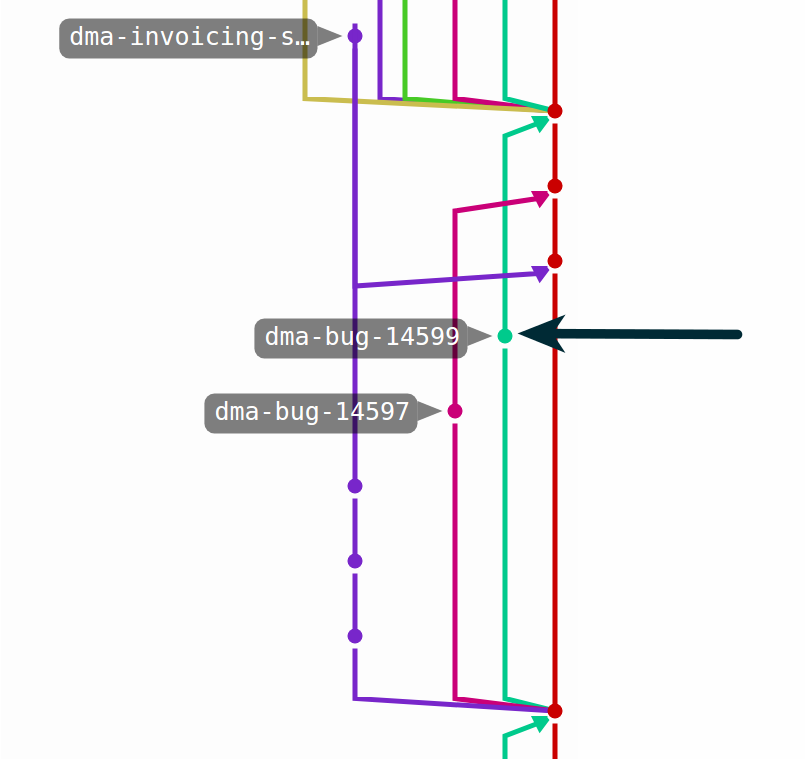
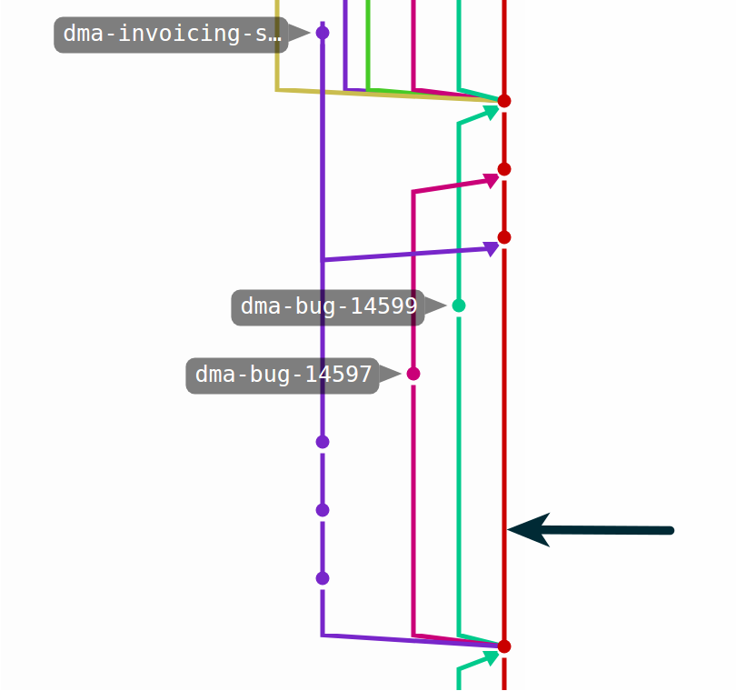
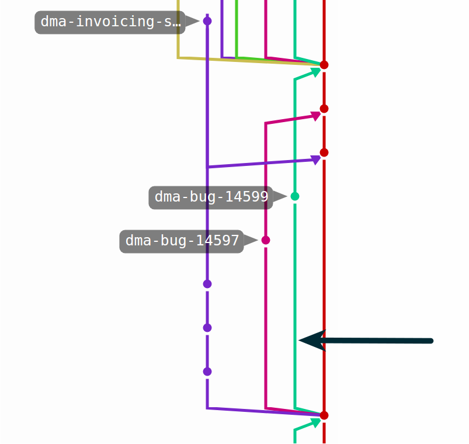
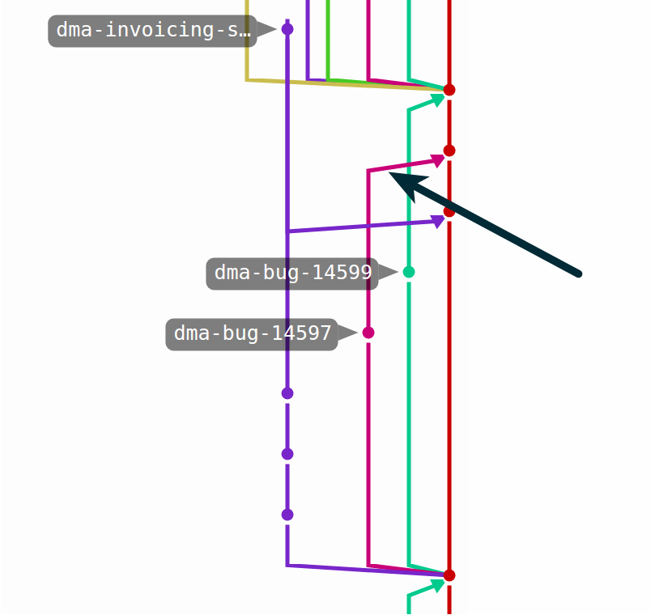

Dawid Mazur / @dwdmzr
Programista różnych rzeczy, głównie ekspresu do kawy @ Positive Power
I decided I could write something better than everything out there in two weeks.
And I was right.
-- Linus Torvalds
git commit -m "Opis commita"

git pull origin master

git branch dma-bug-14599 master
git checkout dma-bug-14599

git checkout master
git merge dma-bug-14597

positive-power.pl/kariera
Twitter: @dwdmzr
Facebook: /dwd.mazur
GitHub: /dmazur